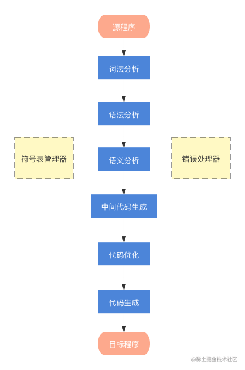
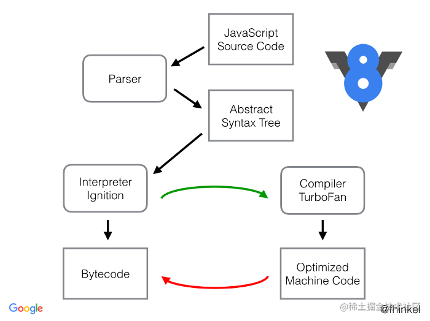

https://juejin.cn/post/6854573222071894029#comment
AST原理
一.抽象语法树（Abstract Syntax Tree）
webpack和Link等很多工具和库的核心都是通过Abstract Syntax Tree抽象语法树这个概念来实现对代码的检查、分析等操作的。
二.抽象语法树用途
代码语法的检查、代码风格的检查、代码格式化、代码高亮、代码错误提示、代码自动补全等
如JSLint、JSHint对代码错误或风格的检查，发现一些潜在错误IDE的错误提示、格式化、高亮、自动补全等
代码混淆压缩
UglifyJS2等
优化变更代码，改变代码结构使其达到想要的结构
代码打包工具webpack、rollup等CommonJS、AMD、CMD、UMD等代码规范之间的转化CoffeeScript、TypeScript、JSX等转化为原生Javascript
https://juejin.cn/post/7021901875649708039
根据《编译原理》的解释，一般的编译过程都要经历以下几个步骤：

V8 引擎的工作流程
V8 的工作流程整体上与上面并无二致。这里先放张图，直观地感受下。图中红、绿线的部分后面会再做解释

常用JavaScript Parser解析工具有：
esprima
traceur
acorn
shift
https://zhuanlan.zhihu.com/p/81877656
大部分编译器的工作可以被分解为三个主要阶段：解析（Parsing），转化（Transformation）以及 代码生成（Code Generation）
解析 将源代码转换为一个更抽象的形式。
转换 接受解析产生的抽象形式并且操纵这些抽象形式做任何编译器想让它们做的事。
代码生成 基于转换后的代码表现形式（code representation）生成目标代码。
转换
编译器的下一个阶段是转换阶段。再回顾一遍，这个过程接收解析生成的抽象语法树并对它做出改动。转换阶段可以改变抽象语法树使代码保持在同一个语言（例如Babel，Babel接收的是JS代码生成的也是JS代码），或者编译成另外一门语言。
traverser函数，这个函数接收抽象语法树以及一个访问者对象
transformer -> traverser(ast, visitor)
接收创造的抽象语法树并将它和一个访问者对象传给 traverser 函数。然后创造一个新的抽象语法树
babel 是如何工作的？
解析 —— @babel/parser（包含 上方提到的 tokenizer、parser），根据 es2015, es2016... 标准，生成 AST
转换 —— @babel/traverse + plugins （visitor）
代码生成 —— @babel/generator
AST 定义
SpiderMonkey in MDN
The ESTree Spec
babel AST 针对 ESTree 的调整
jsx-AST
AST 生成工具 (parser)
esprima —— 老牌解析器
acorn —— esprima 后的轮子，目前使用最多。webpack 也使用此工具
astexplorer —— 在线生成工具
espree —— 最初从 esprima fork 出来，来自 eslint，用于 eslint
babel-parser —— 原 babylon，最初 从 acorn fork 出来
UglifyJS2 —— 自带 parser
shift-parser-js —— 自己定义了一套 AST 规范 shift-spec
其他 AST 转换工具 （transformer）
estraverse
...
代码生成工具 （codeGenerator）
escodegen
...
基于 AST 的工具
如上所描述：
eslint
webpack
UglifyJS 代码压缩
prettier —— 使用 @babel/parser、angular-estree-parser... etc.
typescript —— 自带 parser、transformer、codeGenerator
代码重构
recast
jscodeshift
react-codemod
其他，例如：IDE 错误提示、格式化、高亮、自动补全 等
...